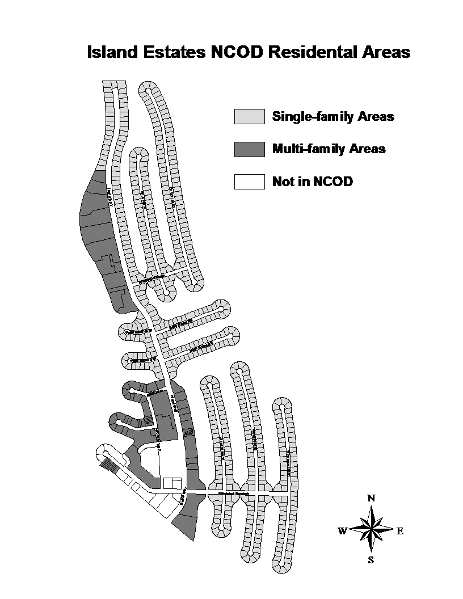
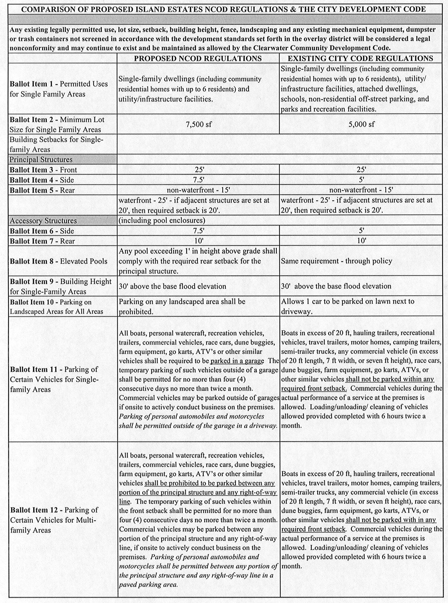
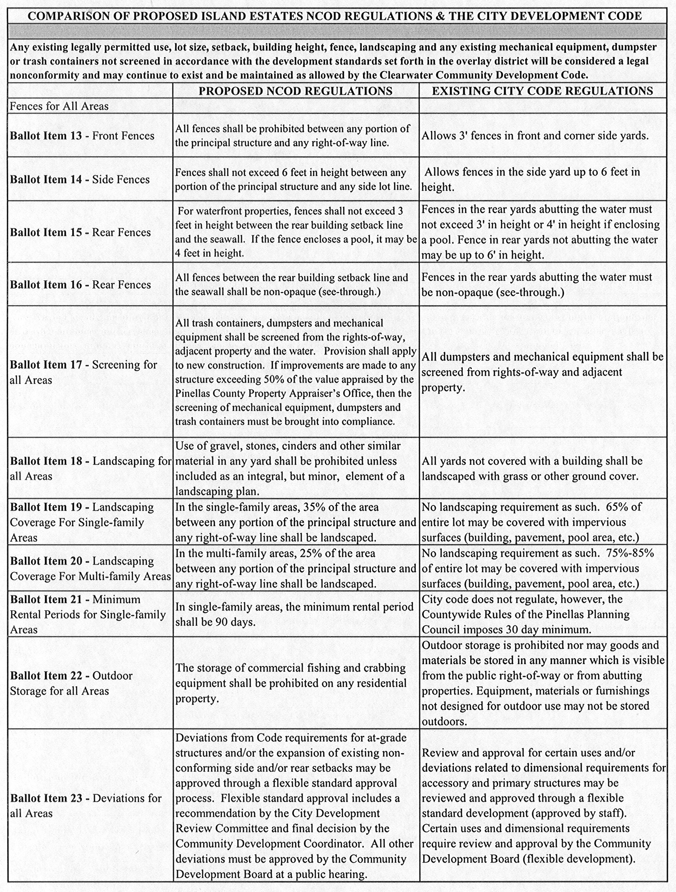
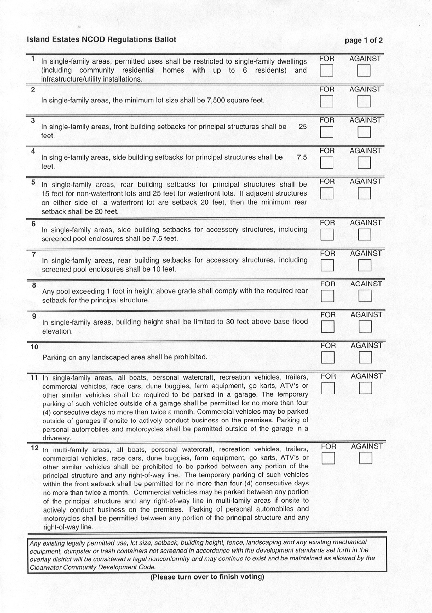
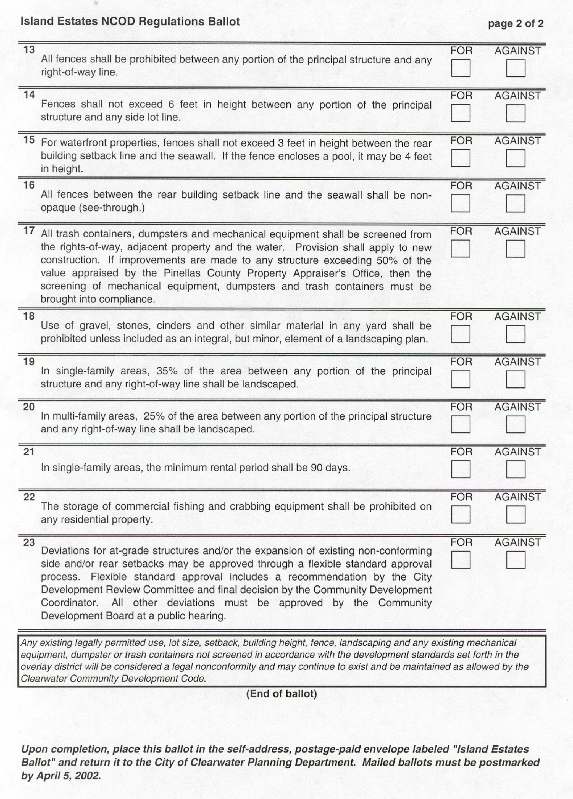
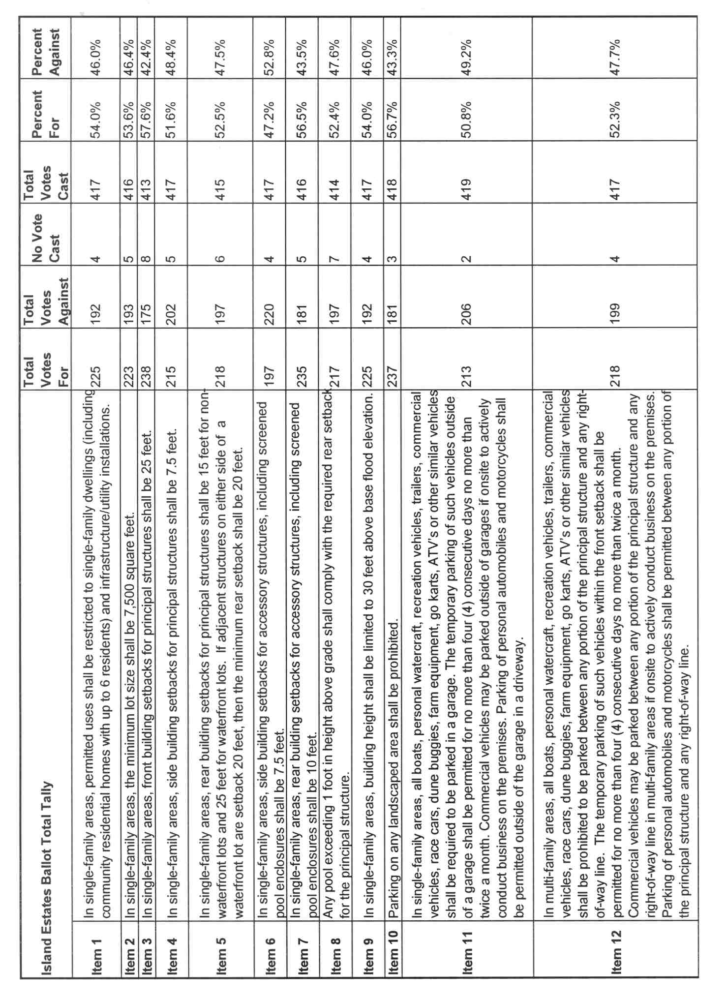
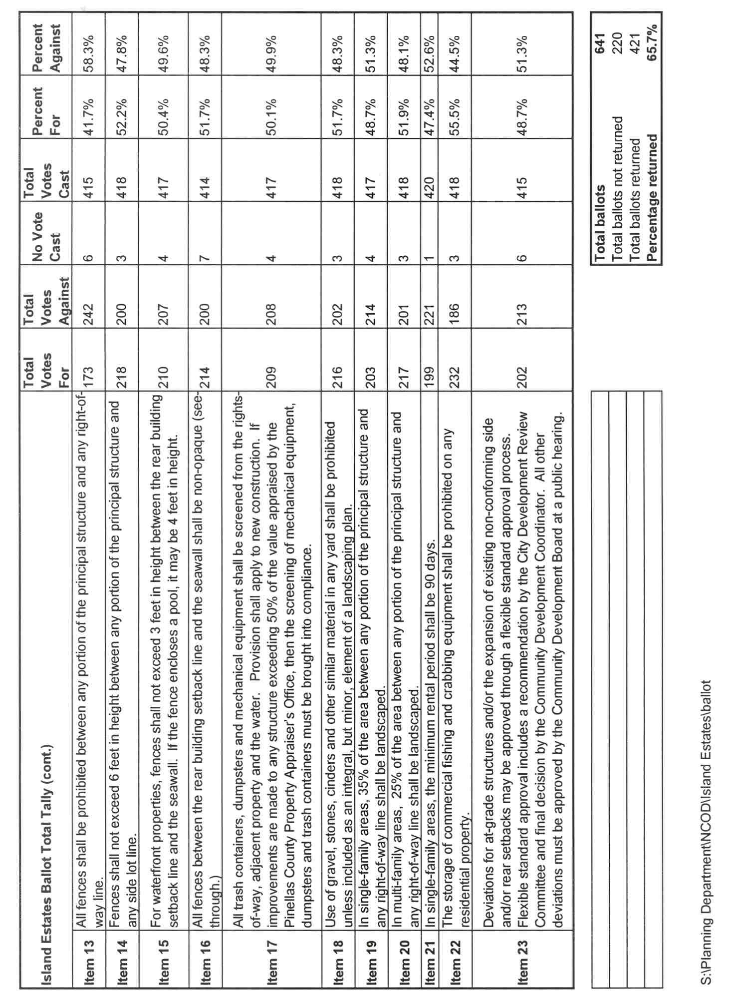

City of Clearwater, FL
Home MenuIsland Estates Neighborhood Plan
This special area plan provides a framework for neighborhood enhancement, change and maintenance. It provides the basis for the implementation of the Island Estates Neighborhood Conservation Overlay District in the Clearwater Community Development Code and is used to coordinate public and private initiatives.
Prepared by the Island Estate Neighborhood and the city of Clearwater Planning Department, September 19, 2002.
For more information about the Island Estates Neighborhood Plan, please contact the Planning and Development Department at 727-562-4567.
April 19, 2001 – City Commission approval
City Commission approved petition of neighborhood to commence the NCOD designation process for Island Estates. Based on neighborhood input, the City Commission appointed a Neighborhood Conservation Study Committee made up of a chairman, six members, and four alternate members.
April 25, 2001 – Staff and Study Committee meeting
Preliminary meeting to discuss the City Commission approval and the next steps in the process.
June 25, 2001 – Staff and Study Committee meeting
Introductions and overview of planning process and committee expectations.
July 16, 2001 – Staff and Study Committee meeting
Discussed expansion of NCOD boundaries to include all multi-family areas and discussed public meeting schedules.
July 30, 2001 – Staff and Study Committee meeting
Discussed expansion of NCOD boundaries to include certain townhouse areas and adopted committee Rules and Procedures.
August 14, 2001 – Staff and Study Committee meeting
Discussed expansion of NCOD boundaries to include certain townhouse areas, finalized planning schedule, and announced websites.
August 27, 2001 – Staff and Study Committee meeting
Discussed voting protocol, discussed invitations to the first public meeting, and distributed committee handbooks.
September 6, 2001 - Commission Meeting
City Commission approved petition of neighborhood to expand the boundary of the Island Estates NCOD to include all residential and institutional property in the neighborhood.
September 25, 2001 - Neighborhood Planning Meeting #1
Described purpose of NCOD and Neighborhood Planning Process, discussed the benefits of the NCOD for Island Estates, and identified neighborhood strengths and weaknesses in small groups.
October 3, 2001 - Staff and Study Committee meeting
Consolidated strengths and weaknesses into a combined list and prepared methods, materials, and format for next Neighborhood Planning Meeting.
October 10, 2001 - Neighborhood Planning Meeting #2
Presented and reviewed strengths and weaknesses and prioritized using dot voting.
October 16, 2001 - Staff and Study Committee meeting
Discussed nominations for new study committee members, reviewed results of the ranking exercise, and prepared them to be categorized by City staff.
October 24, 2001 - Neighborhood Planning Meeting #3
Developed goals and objectives in small groups.
November 1, 2001 - City Commission
New members added to the Study Committee.
November 6, 2001 - Staff and Study Committee meeting
Held first meeting with new committee members, reviewed goals and objectives, and determined items that would qualify as development standards.
November 14, 2001 - Neighborhood Planning Meeting #4
Presented condensed list of goals and objectives to neighborhood and facilitated ranking exercise to determine priorities for objectives and development standards.
November 28, 2001 - Staff and Study Committee meeting
Reviewed and organized neighborhood objectives.
December 5, 2001 - Staff and Study Committee
Discussed the proposed development standards and compared to current City code and neighborhood deed restrictions.
December 12, 2001 - Neighborhood Planning Meeting #5
Presented the potential development regulations to the neighborhood and opened for discussion.
January 16, 2002 - Staff and Study Committee Meeting
Discussed the first draft of the plan and worked on language for the development standards.
January 23, 2002 - Staff and Study Committee Meeting
Reviewed draft plan for finalization, finalized language for development standards, and determined neighborhood implementation activities.
January 28, 2002 - Staff and Study Committee Meeting
Finalized review of draft plan, finalized neighborhood implementation strategies, prepared document for public disbursement.
February 6, 2002 - Neighborhood Meeting #6
Presented final draft plan and development regulations to the neighborhood.
February 27, 2002 - Neighborhood Meeting #7, Final Meeting
Final review of plan, presented draft ballot to neighborhood and discussed voting procedure.
March 13, 2002 - Ballots Mailed to Property Owners
Ballots mailed to owners of real property within proposed NCOD boundaries.
April 25, 2002 - Ballots Tallied by City Staff
The Clearwater Planning and City Clerk Departments tallied returned ballots.
May 1, 2002 - Staff and Study Committee Meeting
Presented ballot results to study committee members.
May 8, 2002 - Staff and Study Committee Meeting
Discussed proposed text amendments based on ballot results, staff recommendations and presentation for Community Development Board Meeting.
June 18, 2002 - Community Development Board Meeting
Island Estates Neighborhood Plan, text amendments and rezoning reviewed by the City of Clearwater Community Development Board.
July 25, 2002 - Staff and Study Committee Meeting
Discussed outcome of Community Development Board and prepared for City Commission meeting.
July 8, 2002 - City Commission Meeting
Island Estates Neighborhood Conservation Overlay District development standards and rezoning approved on first reading pursuant to Ordinance Numbers 6981-02 and 6980-02. The neighborhood plan was deferred so changes could be made to reflect the ordinance that was approved on 1st reading.
August 22, 2002 - City Commission Meeting
The Clearwater City Commission adopted Ordinance Numbers 6981-02 and 6980-02 establishing the Island Estates Neighborhood Conservation Overlay District and rezoning. The effective date of the ordinances is September 9, 2002.
September 19, 2002 - City Commission Meeting
City Commission approved the Island Estates Neighborhood Plan by adopting Resolution 02-23.
| Importance Value (1-5) |
Objectives |
|
| RE-DEVELOPMENT | ||
| Maintain limits on home heights to present city code |
||
| Objective: Maintain 30% green space of total lot area |
||
| Prohibit rezoning single family homes to multi-family |
||
| Prohibit subdividing plats |
||
| HOUSING & PROPERTY |
||
| Prohibit detached outbuilding on residential single-family lots |
||
| Prohibit front yard fences |
||
| Require A/C units to be buffered or shielding with vegetation |
||
| Cleanup parking lot & dumpsters |
||
| Enforce pet cleanup |
||
| Enforce zoning in order to mitigate commercial uses in residential areas |
||
| Establish minimum single family rental periods |
||
| Maintain existing height limitations for all fencing and landscaping |
||
| Prohibit chain link fences |
||
| Prohibit future shingle roofs |
||
| Prohibit new gravel yards |
||
| Prohibit parking on lawns |
||
| Require A/C units and dumpsters not be visible from street |
||
| Require one front entrance per house |
||
| Restrict trailer parking in the front yard |
||
| WATERFRONT |
||
| Address dock size restrictions |
||
| Allow only see through fences |
||
| Establish standard setback for new pools and all vertical structures |
||
| Maintain water views |
||
| Objective: Allow covered slips |
||
| Regulate commercial boats docked parked on waterfront property |
||
| Structurally damaged sea wall/docks should be repaired in a reasonable |
||
| TRAFFIC & PARKING |
||
| Limit RV's and boats short time (24 hrs.) for parking on street and in driveways |
||
| Limit on street parking |
||
| Prohibit parking on grassy medians and cul-de-sacs |
||
| Prohibit Permanent parking of boats/trailers outside of garage |
||
| Restrict overnight commercial vehicle parking. |
Generally issues with fewer than 200 points were regarded as not significant to the neighborhood.
| Items | Total Ranking Votes |
Average Ranking Vote per Ballot |
Number of Votes 0-2 |
Number of Votes 3 to 5 |
| Prohibit rezoning single family homes to multi-family |
290 | 4.68 |
3 |
59 |
| Prohibit subdividing plats |
277 | 4.47 |
6 |
56 |
| Prohibit parking on lawns |
277 | 4.47 | 7 | 55 |
| Maintain water views |
271 | 4.37 | 6 | 56 |
| Restrict trailer parking in the front yard |
267 | 4.31 | 6 | 56 |
| Structurally damaged sea wall/docks should be repaired in 60 days |
261 | 4.21 | 7 | 55 |
| Maintain existing height limitations for all fencing and landscaping |
260 | 4.19 | 6 | 56 |
| Establish standard waterfront setbacks |
258 | 4.16 | 10 | 52 |
| Maintain limits on home heights to present city code |
251 | 4.05 | 12 | 50 |
| Prohibit front yard fences |
250 | 4.03 | 10 | 52 |
| Prohibit new gravel yards |
248 | 4.00 | 11 | 51 |
| Enforce zoning in order to mitigate commercial uses in residential areas |
247 | 3.98 | 12 | 50 |
| Establish standard setback for new pools and all vertical structures |
246 | 3.97 | 11 | 51 |
| Restrict overnight commercial vehicle parking |
245 | 3.95 | 15 | 47 |
| Enforce pet cleanup |
244 | 3.94 | 11 | 51 |
| Cleanup parking lot & dumpsters |
243 | 3.92 | 11 | 51 |
| Prohibit parking on grassy medians and cul-de-sacs |
241 | 3.89 | 13 | 49 |
| Prohibit permanent parking of boats/trailers outside of garage |
233 | 3.76 | 15 | 47 |
| Establish minimum single family rental periods |
230 | 3.71 | 15 | 47 |
| Objective: Maintain 30% green space of total lot area |
224 | 3.61 | 16 | 46 |
| Limit RV's and boats short time (24 hrs.) for parking on street and in driveways |
222 | 3.58 | 16 | 46 |
| Require A/C units and dumpsters not be visible from street |
220 | 3.55 | 16 | 46 |
| Regulate commercial boats docked parked on waterfront property |
217 | 3.50 | 17 | 45 |
| Require A/C units to be buffered or shielded with vegetation |
213 | 3.44 | 17 | 45 |
| Require one front entrance per house |
210 | 3.39 | 20 | 42 |
| Address dock size restrictions |
203 | 3.27 | 21 | 41 |
| Limit on street parking |
191 | 3.08 | 23 | 39 |
| Allow only see through fences |
191 | 3.08 | 24 | 38 |
| Prohibit detached outbuilding on residential single-family lots |
189 | 3.05 | 23 | 39 |
| Prohibit chain link fences |
169 | 2.73 | 31 | 31 |
| Allow covered slips |
147 | 2.37 | 32 | 30 |
| Prohibit future shingle roofs |
102 | 1.65 | 42 | 20 |
The following lists the grouped strengths of Island Estates. This list is ranked with the most important issues first. The main categories are underlined, and the assets fall under each main category.
Neighborhood Amenities
- Quality and availability of services such as grocery, gas station, store, bank and park
- Holiday lighting and events, including boat parade
- Public transportation, including Jolly Trolley
- St. Brendan's Church
- Community safety
- Restaurants and bars on island, including Island Way Grill
- Island Estates Civic Association
- Sunset Sam Park
- Clearwater Marine Aquarium
- Island Estates Women's club
- Ability to walk on Island Estates
- Boat yard
- Access to recreation opportunities on Causeway
Waterfront
- Mostly residential waterfront community
- Water view
- Waterfront homes
- Boating community
- New money and increased interest in neighborhood
- Increase in property values
- All waterfront properties
- Access to water
- Allowed to have multiple boats on docks
- Deep water in canals
Not being in overlay district
- Island Estates is fine as it is
- Current maximum build out allowed
- Island Estates is unique and prospering
- Flexibility of zoning
Property Maintenance
- Well-maintained property
- Eliminating unkempt homes
- Updating properties
- Beautiful properties
- Looks better and newer
Reclaimed water
On-street parking-cars onlyThe following lists the grouped weaknesses of Island Estates. This list is ranked with the most important issues first. The main categories are underlined, and specific issues fall under each main category.
Landscaping & Yard Maintenance
- Gravel yards
- Poor yard maintenance
- Chain link fences
- Exposed dumpsters/trashcans on rental and condominium properties
- Lack of street trees in right-of-way
- Landscaping blocking view
- People not controlling animals
- Use of grass in neighborhoods wastes water and pollutes bay
- Use of potable water for lawns
- Temporary signs on landscaping (real state, garage sale)
- Garbage cans out when it is not garbage day
- Lack of streetscape throughout Island
- Yard debris piles placed in roadway instead of on property
- Playground equipment in front yard
- Litter (newspapers)
Parking and Traffic
- Parking of commercial vehicles in front yard and on street
- Parking of cars/boats/RV's on lawns & driveways looks cluttered
- On-street parking
- Large number of cars parked in driveway
- Parking in cul-de-sacs and medians
- Dangerous intersections
- Speeding traffic
- Turning land into Island Estates often blocked by traffic
Above ground utilities
Canal Use and Maintenance
- Restricted water flow
- Contaminates dumped in canal (grass clippings, has spillage)
- Shoaling under bridge
- Airboat noise
- Boatlift covers block view
- Speeding on canals
- No wake zone needs extending & enforcement
- Damaged or deteriorated docks and seawalls
- Dock covers are not allowed
- Lack of public docks
Character of Redevelopment
- Too many variances on setbacks
- No minimum lot size/ could crowd houses
- Waterfront setback requirements are not maintained
- Losing waterfront yards
- Can ruin views/tall buildings
- Fences on waterfront
- Sheds in rear
- Houses too large
Dear Island Estates Property Owner,
In May 2001, the Island Estates neighborhood began planning for a Neighborhood Conservation Overlay District (NCOD). The purpose of the NCOD is to preserve and enhance the character of the neighborhood and ensure that any new development is consistent with the existing character of Island Estates. Through a series of public meetings, the residents of Island Estates developed a neighborhood plan as well as a list of development and property maintenance regulations designed to protect the health, safety, welfare and quality of life of the neighborhood.
One of the final steps in the Island Estates NCOD planning process is a neighborhood poll to determine the proposed development and property maintenance regulations. The results of the vote will be provided to the Community Development Board and the City Commission for consideration when reviewing the proposed regulations. Development standards with support of at least fifty-one (51) percent of the votes cast will be forwarded for consideration. Please refer to the enclosed “Comparison of Proposed Island Estates NCOD Regulations and the City Development Code” for information about the proposed changes. Any existing legally permitted use, lot size, setback, building height, fence, landscaping and any existing mechanical equipment, dumpster or trash containers not screened in accordance with the development standards in the overlay district will be considered a legal nonconformity and may continue to exist and be maintained as allowed by the Clearwater Community Development Code.
Enclosed with this letter you will find:
- A reference map distinguishing the single-family areas from the multi-family areas (p. 2);
- A table comparing the proposed regulations to the existing City Community Development Code (pp.3-4);
- A two-sided ballot with proposed development regulations on which to vote (pp. 5-6); and
- A self-addressed, postage-paid envelope for ballot return.
Ballots are being sent to property owners of each real property as listed on the Property Appraiser’s tax roll. One vote per property will be tallied. This is a line-item vote and each item will be tallied separately. Vote either “FOR” or “AGAINST” in response to each issue. Make a mark in the box directly below the choice you have selected. The most appropriate marks would be an “X,” a check mark or filling in of the box. Appropriate examples:
Votes must be marked clearly. If votes are not marked clearly or if there are marks in more than one box for each issue, no vote will be tallied for that item. If an item is left unanswered on a ballot, no vote will be tallied for that item, but all other eligible marked votes will be counted for that ballot.
Place the completed ballot in the enclosed self-addressed, postage-paid envelope labeled “ISLAND ESTATES BALLOT.” Seal the envelope and mail it to the City of Clearwater Planning Department. Ballots returned that are not enclosed in this provided envelope will not be counted. No copies of ballots will be accepted. The ballot must be returned or postmarked on or before April 5, 2002.
The results will be available on May 1, 2002. Please contact the City of Clearwater Planning Department at 727-562-4539 or look online at “http://www.clearwater-fl.com” for results.
Please direct questions to Lochen Wood, Planner, at 727-562-4539 or Gina Clayton, Long Range Planning Manager, at 727-562-4587. Thank you for your participation in the Island Estates Neighborhood Plan.
Sincerely,
City of Clearwater, Planning Department







ORDINANCE NO. 6981-02
AN ORDINANCE OF THE CITY OF CLEARWATER, FLORIDA, AMENDING THE COMMUNITY DEVELOPMENT CODE; AMENDING ARTICLE 2, ZONING DISTRICTS, BY CREATING SECTION 2-1602, ISLAND ESTATES NEIGHBORHOOD CONSERVATION OVERLAY DISTRICT, WHICH ESTABLISHES ADDITIONAL DEVELOPMENT STANDARDS TO BE APPLIED ONLY IN THE ISLAND ESTATES NEIGHBORHOOD CONSERVATION OVERLAY DISTRICT; PROVIDING AN EFFECTIVE DATE
WHEREAS, the Island Estates neighborhood has developed the Island Estates Neighborhood Plan pursuant to Community Development Code Section 4-608, which supports additional code requirements to implement the Plan; and
WHEREAS, the City of Clearwater has approved the Island Estates Neighborhood Plan in Resolution No. 02-23; and
WHEREAS, the City of Clearwater has determined that additional standards shall be applied to the Island Estates neighborhood to implement such plan; and
WHEREAS, the residents of Island Estates voted on certain additional standards that shall be applied to the Island Estates neighborhood to implement such plan; and
WHEREAS, the Island Estates neighborhood via the Island Estates Civic Association has committed to be a partner with the City in implementing the provisions of this overlay district by committing to educating neighborhood property owners of the overlay district requirements and providing the initial means of enforcement of any violation of the requirements of the overlay district pursuant to Community Development Code Section 4-608(E); and
WHEREAS, the Community Development Board, pursuant to its responsibilities as the Local Planning Agency, has reviewed this amendment, conducted a public hearing to consider all public testimony and has determined that this amendment is consistent with the City of Clearwater’s Comprehensive Plan; and
WHEREAS, the City Commission has fully considered the recommendation of the Community Development Board and testimony submitted at its public hearing; now, therefore,
BE IT ORDAINED BY THE CITY COMMISSION OF THE CITY OF CLEARWATER, FLORIDA:
Section 1. Article 2, Zoning Districts, Division 16, Section 2-1602 Island Estates Neighborhood Conservation Overlay District is hereby created containing the following provisions.
2-1602 Island Estates Neighborhood Conservation Overlay District.
A. Intent and Purpose. The Island Estates Neighborhood Plan was developed in response to neighborhood needs and approved by the City Commission on August 8, 2002, to provide guidance and policy direction for all public and private actions within and in the vicinity of the Island Estates neighborhood. The intent and purpose of the Island Estates Neighborhood Conservation Overlay District (IENCOD) is to provide overlay requirements to ensure that infill and redevelopment activities are consistent with the protection of the existing established character within the district and to protect the health, safety and general welfare of the district. Development and redevelopment shall be reviewed for consistency with the Island Estates Neighborhood Plan. Any development requesting flexibility from the minimum development standards of the IENCOD shall be consistent with the Island Estates Neighborhood Plan.
B. Jurisdictional Boundaries. The Island Estates Neighborhood Conservation Overlay District (IENCOD) shall be consistent with the boundaries of all the land in Clearwater Harbor, known as Island Estates lying northerly of the northerly right of way line of Memorial Causeway, less and except the following described tracts: (1) All of Block C, and Lots 1-3, 7, 9-13, Block D, and the westerly 61 feet of the vacated right-of-way of Dory Passage, Unit 5 Island Estates of Clearwater as recorded in Plat Book 51, Page 34, of the Public Records of Pinellas County, Florida; (2) Begin at the most easterly corner of Lot 13, Block D of Unit 5 Island Estates of Clearwater; as recorded in Plat Book 51, Page 34, of the Public Records of Pinellas County, Florida; thence N49°23’41”W, 100.00 feet; thence N04°23’41”W, 71.42 feet, to a point on a curve to the left; thence along the arc of said curve, having a radius of 70.00 feet, a chord bearing of N75°47’40”E, a chord length of 23.86 feet, 23.98 feet; thence S49°23’41”E, 136.75 feet; thence S08°12’32”E, 81.05 feet; thence S40°36’19”W, 16.63 feet; thence N49°23’41”W, 61.00 feet to the Point of Beginning; (3) Island Yacht Club Condominium, as recorded in Condominium Plat Book 39, Page 74, of the Public Records of Pinellas County, Florida; (4) the land bounded on the north by Dory Passage, on the south by Windward Passage, on the west by Larboard Way and on the east by Island Way.
C. Relationship to Underlying Districts and Other Provisions of the Community Development Code. The designation of the Island Estates Neighborhood Conservation Overlay District on the zoning atlas provides requirements in addition to those contained in the Low Medium Density Residential, Medium Density Residential, Medium High Density Residential, High Density Residential, Institutional and Commercial Districts. The provisions contained herein shall govern in this overlay district only. Issues not specifically addressed in this overlay district shall be governed by the remaining provisions of this Community Development Code.
D. Minimum standard development for areas zoned LMDR/IENCOD. The following uses are Level One permitted uses in the LMDR/IENCOD District subject to the minimum standards set out in this Section and other applicable provisions of Article 3.
| Table 2-1601(D). "LMDR/IENCOD" Minimum Development |
|||||||
| Use |
Min. Lot Area (sq. ft.) |
Min. Lot Width (ft.) |
Min. Setbacks (ft.) |
Max Height (ft.) (1) |
Min. Off-Street Parking |
||
| Front |
Side |
Rear (2) |
|||||
| Accessory pools and screen enclosures |
5 |
10 |
|||||
| Community Residential Homes (up to 6 residents) |
7,500 |
50 |
25 |
7.5 |
15 |
30 |
2/unit |
| Detached dwellings |
7,500 |
50 |
25 |
7.5 |
15 |
30 |
2/unit |
- In special flood hazard areas designated by the National Flood Insurance Program, maximum height is measured above base flood elevation.
- Any pool exceeding 1 foot in height above grade shall comply with the required rear setback for the principal structure. Waterfront detached dwellings in the LMDR/IENCOD District should be 25 feet except as provided in Article 3, Division 8, Section 3-805 and Division 9, Section 3-904 and except where adjacent structures on either side of the parcel proposed for development are setback 20 feet and then the rear setback shall be 20 feet. The Building Code may require the rear setback to be at least 18 feet from a seawall.
E. Flexible standard development for areas zoned LMDR/IENCOD. The following Level One uses are permitted in the LMDR/IENCOD District subject to the standards and criteria set out in this Section and other applicable regulations in Article 3.
| Table 1-1601(E). "LMDR/IENCOD" Flexible Standard Development |
|||||||
| Use | Min. Lot Area (sq. ft.) |
Min. Lot Width (ft.) |
Min. Setbacks (ft.) |
Max Height (ft.) (1) |
Min. Off-Street Parking |
||
| Front | Side |
Rear |
|||||
| Detached Dwellings |
7,500 |
50 |
15-25 |
7.5 | 5 - 15 |
30 |
2/unit |
| Residential Infill Project (3) |
n/a | n/a |
15-25 |
3-7.5 |
5 - 15 |
30 |
2/unit |
| Utility/Infrastructure Facilities (4) |
n/a | n/a |
25 |
10 |
15 |
n/a |
n/a |
- In special flood hazard areas designated by the National Flood Insurance Program, maximum height is measured above base flood elevation.
- Any pool exceeding 1 foot in height above grade shall comply with the required rear setback for the principal structure. Waterfront detached dwellings in LMDR/IENCOD District should be 25 feet except as provided in Article 3, Division 8, Section 3-805 and Division 9, Section 3-904 and except where adjacent structures on either side of the parcel proposed for development are setback 20 feet and then the rear setback shall be 20 feet. The Building Code may require the rear setback to be at least 18 feet from a seawall.
- The development standards for residential infill projects are guidelines and may be varied based on the criteria specified in Section 2-1602.E.2.
- Utility/infrastructure uses shall not exceed three acres. Any such use, alone or when added to contiguous like uses which exceed three acres shall require a land use plan map amendment to transportation/utility which shall include such uses and all contiguous like uses.
Flexibility criteria:
1. Detached Dwellings.
a. The development or redevelopment of the parcel proposed for development is consistent with the Island Estates Neighborhood Plan.
b. Front setback:
i. A determination of the front setback shall consider the extent to which existing structures in the neighborhood have been constructed to a regular or uniform setback from the right-of-way;
ii. The reduction in front setback will not adversely affect adjacent property values;
iii. The reduction in front setback is consistent with neighborhood character;
iv. The reduction in front setback results in an efficient house layout.
c. Rear setback:
i. The reduction in rear setback will allow for the preservation of existing vegetation which could not otherwise be preserved; or
ii. The reduction in rear setback will allow the development or redevelopment of a substandard lot which would otherwise not be feasible; or
iii. The reduction in rear setback results in an efficient house layout; and
iv. The structures located within the rear setback otherwise required in the LMDR/IENCOD District are buffered with landscape material or fences to protect the privacy and value of adjacent properties.
2. Residential infill.
a. The development or redevelopment of the parcel proposed for development is consistent with the Island Estates Neighborhood Plan;
b. Single-family detached dwellings and community residential homes with six (6) or fewer residents are the only permitted uses eligible for residential infill project application;
c. The development or redevelopment of the parcel proposed for development is otherwise impractical without deviations from the intensity and other development standards;
d. The development of a parcel proposed for development as a residential infill project will not materially reduce the fair market value of abutting properties;
e. The uses within the residential infill project are compatible with adjacent land uses;
f. The development of the parcel proposed for development as a residential infill project will upgrade the immediate vicinity of the parcel proposed for development;
g. The design of the proposed residential infill project creates a form and function which enhances the community character of the immediate vicinity of the parcel proposed for development and the City of Clearwater as a whole; and
h. Flexibility in regard to lot width, required setbacks, height, off-street parking, access or other development standards is justified by the benefits to community character and the immediate vicinity of the parcel proposed for development and the City of Clearwater as a whole.
3. Utility/infrastructure facilities.
a. The development or redevelopment of the parcel proposed for development is consistent with the Island Estates Neighborhood Plan;
b. The siting and screening of the proposed utility/infrastructure facility protects the established character of the Island Estates neighborhood;
c. No above ground structures are located adjacent to a street right-of-way; and
d. Any above ground structure other than permitted telecommunications towers and utility distribution lines located on or along a rear lot line shall be screened from view by a landscaped opaque wall or fence which is at least two-thirds the height of the above ground structure and shall be landscaped with trees and hedges which five years after installation will substantially obscure the fence or wall and the above ground structure
F. Flexible development for areas zoned LMDR/IENCOD. The following Level Two uses are permitted in the LMDR/IENCOD District subject to the standards and criteria set out in this Section and other applicable regulations in Article 3.
| Table 2-1601(E). "LMDR/IENCOD" Flexible Development |
|||||||
| Use | Min. Lot Area (sq. ft.) |
Min. Lot Width (ft.) |
Min. Setbacks (ft.) |
Max Height (ft.) (1) |
Min. Off-Street Parking |
||
| Front | Side |
Rear (2) |
|||||
| Detached Dwellings |
4,500-7,500 |
25 - 50 |
15 - 25 |
3 - 7.5 |
5 - 15 |
30 |
2/unit |
| Residential Infill Project (3) |
n/a |
n/a |
10 - 25 |
0 - 7.5 |
0 - 15 |
30 |
1/unit |
- In special flood hazard areas designated by the National Flood Insurance Program, maximum height is measured above base flood elevation.
- Any pool exceeding 1 foot in height above grade shall comply with the required rear setback for the principal structure. Waterfront detached dwellings in LMDR/IENCOD District should be 25 feet except as provided in Article 3, Division 8, Section 3-805 and Division 9, Section 3-904 and except where adjacent structures on either side of the parcel proposed for development are setback 20 feet and then the rear setback shall be 20 feet. The Building Code may require the rear setback to be at least 18 feet from a seawall.
- The development standards for residential infill projects are guidelines and may be varied based on the criteria specified in Section 2-1602.F.2.
Flexibility Criteria:
1. Detached Dwellings.
a. The development or redevelopment of the parcel proposed for development is consistent with the Island Estates Neighborhood Plan;
b. Minimum lot size per dwelling of less than 7,500 square feet is an existing lot or a lot size of less than 7,500 square feet is necessary to the development or redevelopment of a vacant lot which would otherwise not be economically feasible;
c. The volume to lot size ratio of the structures to be developed on the lot is not more than ten percent greater than the average volume to lot size ratio of all existing structures located on the same local street and within a 700 feet radius of the lot;
d. Front setback:
i. The existing structures along the same side of the road have been constructed with irregular setbacks and the proposed reduction in front setback will not be out of character with the neighborhood;
ii. The extent to which existing structures in the neighborhood have been constructed to a regular or uniform setback from the right-of-way;
iii. The reduction in front setback will not adversely affect adjacent property values;
e. Rear setback:
i. The reduction in rear setback will allow for the preservation of existing vegetation which could not otherwise be preserved;
ii. The reduction in rear setback will allow the development or redevelopment of a substandard structure which would otherwise not be feasible; or
iii. The reduction in rear setback will result in an efficient house layout.
f. Side setback: The reduction in side setback will allow for the preservation of existing vegetation that could not otherwise be preserved.
2. Residential Infill.
a. The development or redevelopment of the parcel proposed for development is consistent with the Island Estates Neighborhood Plan;
b. Single-family detached dwellings and community residential homes with six (6) or fewer residents are the only permitted uses eligible for residential infill project application;
c. The development or redevelopment of the parcel proposed for development is otherwise impractical without deviations from the intensity and other development standards;
d. The development of a parcel proposed for development as a residential infill project will not materially reduce the fair market value of abutting properties;
e. The uses within the residential infill project are compatible with adjacent land uses;
f. The development of the parcel proposed for development as a residential infill project will upgrade the immediate vicinity of the parcel proposed for development;
g. The design of the proposed residential infill project creates a form and function which enhances the community character of the immediate vicinity of the parcel proposed for development and the City of Clearwater as a whole; and
h. Flexibility in regard to lot width, required setbacks, height, off-street parking, access or other development standards is justified by the benefits to community character and the immediate vicinity of the parcel proposed for development and the City of Clearwater as a whole.
G. Additional development standards for single-family areas zoned LMDR/IENCOD
1. Parking on Landscaped Areas. The parking of any type of vehicle, trailer, boat, personal watercraft, recreational vehicle, or any other similar vehicle shall be prohibited on grass or any other landscaped area;
2. Fences.
a. Fences shall not exceed 6 feet in height between any portion of the principal structure and any side lot line;
b. All fences between the rear building setback line and the seawall shall be non-opaque (see-through);
3. Landscaping Requirements. Use of gravel, stones, cinders and other similar material in any yard shall be prohibited unless included as an integral, but minor, element of a landscaping plan; and
4. Outdoor Storage. The storage of commercial fishing and crabbing equipment shall be prohibited outdoors on any residential property.
H. Additional development standards for multi-family areas zoned MDR/IENCOD, MHDR/IENCOD, HDR/IENCOD and C/IENCOD.
1. Parking.
a. The parking of any type of vehicle, trailer, boat, personal watercraft, recreational vehicle, or any other similar vehicle shall be prohibited on grass or any other landscaped area.
b. All boats, personal watercraft, recreation vehicles, trailers, commercial vehicles, race cars, dune buggies, farm equipment, go karts, ATV’s or other similar vehicles shall be prohibited to be parked between any portion of the principal structure and any right-of-way line. The temporary parking of such vehicles within the front setback shall be permitted for no more than four (4) consecutive days no more than twice a month. Commercial vehicles may be parked between any portion of the principal structure and any right-of-way line in multi-family areas if onsite to actively conduct business on the premises. Parking of personal automobiles and motorcycles shall be permitted between any portion of the principal structure and any right-of-way line.
2. Fences.
a. Fences shall not exceed 6 feet in height between any portion of the principal structure and any side lot line.
b. All fences between the rear building setback line and the seawall shall be non-opaque (see-through.)
3. Landscaping Requirements.
a. Use of gravel, stones, cinders and other similar material in any yard shall be prohibited unless included as an integral, but minor, element of a landscaping plan.
b. Twenty-five percent (25%) of the area between any portion of the principal structure and any right-of-way line shall be landscaped.
4. Outdoor Storage. The storage of commercial fishing and crabbing equipment shall be prohibited outdoors on any residential property.
I. Additional development standards for areas zoned I/IENCOD.
1. Landscaping Requirements. Use of gravel, stones, cinders and other similar material in any yard shall be prohibited unless included as an integral, but minor, element of a landscaping plan.
Section 2. This ordinance shall take effect on September 9, 2002.
| PASSED ON FIRST READING |
______________ |
| PASSED ON SECOND AND FINAL READING AND ADOPTED |
______________ |
| |
|
| Brian J. Aungst |
|
| Mayor-Commissioner |
|
| Approved as to form: |
Attest: |
| |
|
| Leslie K. Dougall-Sides |
Cynthia E. Goudeau |
| Assistant City Attorney |
City Clerk |